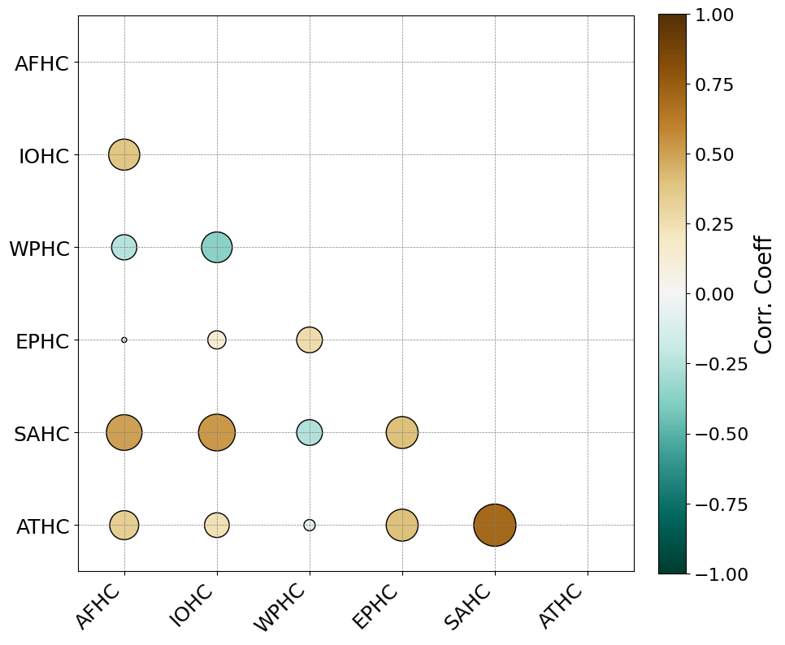

Regional Hadley circulations tell distinct stories
Global-mean studies can obscure important regional differences in strength and extent. This work offers a comprehensive view of Hadley circulations across six geographic domains and asks what makes each region behave differently.
Reference: Pratiksha & Neena (2023), AGU Fall Meeting Abstract ↗
